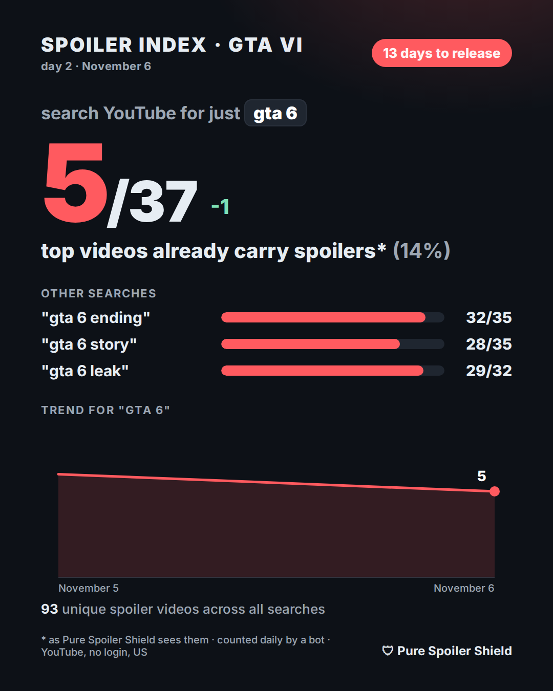

GTA 6 Spoiler Index
Updated 2026-11-13 · day 9 · 6 days to release
Today: search YouTube for just "gta 6" and 4 of the top 40 videos already carry spoilers. Across all four searches below there are 83 unique spoiler videos.

Every day
| Date | "gta 6" | "gta 6 ending" | "gta 6 story" | "gta 6 leak" | Unique spoiler videos |
|---|---|---|---|---|---|
| 2026-11-13 | 4 / 40 | 28 / 30 | 24 / 35 | 27 / 31 | 83 |
| 2026-11-12 | 3 / 40 | 29 / 30 | 23 / 35 | 25 / 29 | 78 |
| 2026-11-11 | 4 / 40 | 27 / 29 | 23 / 35 | 26 / 30 | 79 |
| 2026-11-10 | 4 / 37 | 27 / 30 | 33 / 35 | 27 / 31 | 89 |
| 2026-11-09 | 6 / 40 | 27 / 28 | 27 / 35 | 26 / 30 | 84 |
| 2026-11-08 | 5 / 37 | 31 / 33 | 30 / 35 | 29 / 32 | 92 |
| 2026-11-07 | 7 / 37 | 31 / 32 | 31 / 35 | 30 / 32 | 97 |
| 2026-11-06 | 4 / 37 | 32 / 34 | 28 / 35 | 29 / 33 | 93 |
| 2026-11-05 | 6 / 37 | 30 / 34 | 27 / 35 | 28 / 31 | 90 |
Raw numbers: spoiler-index.json (free to reuse with a link back).
How it is counted
- Once a day a bot opens youtube.com in a clean browser with no account and no history (US, English), runs the same four searches and takes the first 40 videos of each, Shorts included, ads excluded.
- A video counts as a spoiler when Pure Spoiler Shield with its default GTA VI list on the "spoilers only" level would blur it: GTA VI plus words like ending, leak, story, twist or a character name. Plain trailers and news do not count.
- It reads titles and text, not images, so it can miss a spoiler that is only in a thumbnail. The same searches run every day, so the trend is comparable even where single videos are judged wrong.
- Video titles are not published here, because they are the spoilers.
Disclosure: I build Pure Spoiler Shield. Not affiliated with Rockstar Games or Take-Two.